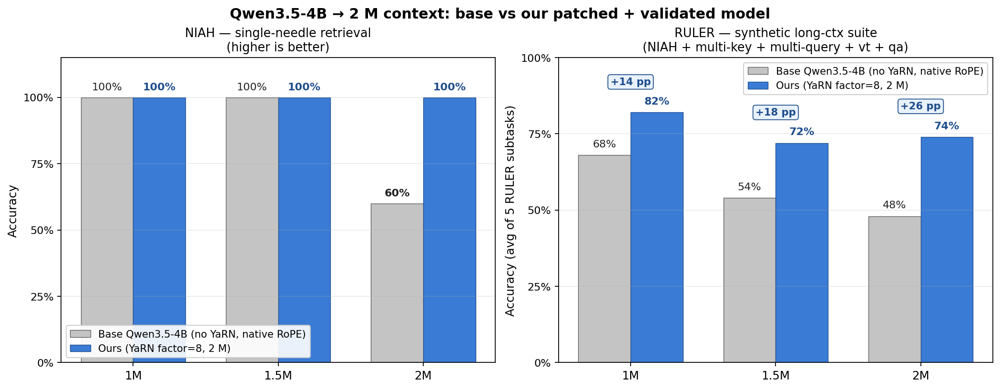

红楼梦 · 全本
引擎 longluxi-4B · YaRN ×8
vLLM TP=4 · H100×4
vLLM TP=4 · H100×4
下面每个数字都来自仓库内 committed 的 benchmark（NIAH / RULER / InfiniteBench），可一键复现 scripts/run_base_2m_benchmarks.sh。灰 = base 裸 RoPE，蓝 = 我们 YaRN×8。

32 层里 24 层是线性注意力（门控增量网络 GDN），像大脑一样边读边把信息压进一个持续更新的记忆状态—— 开销随长度线性增长、不爆炸；每隔 3 层插一层全注意力，负责精确回忆具体细节。 读一遍即成记忆，要用时再精确检索 —— 这正是它能在一台 4 卡机上通读整本、逐字定位的根因。